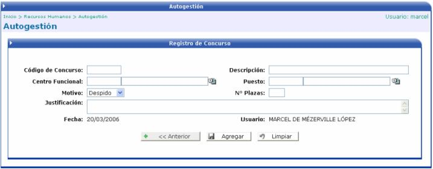
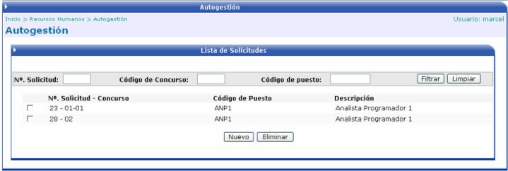

En esta opción el usuario puede solicitar al departamento de recursos humanos, la apertura de un concurso de reclutamiento y selección para una nueva plaza. Al ingresar a esta opción el usuario tendrá que llenar los siguientes datos: el puesto a solicitar, el motivo la fecha de solicitud, el número de plazas, una descripción del motivo, el código del concurso, el centro funcional, y una descripción del concurso:

Luego de llenar los datos se debe de presionar el botón para guardar los cambios. Luego para que la solicitud se haga efectiva se tiene que presionar el botón. El seguimiento de dicha solicitud se llevará a cabo desde el módulo de Reclutamiento y Selección << Registro de Solicitudes de Concurso.
También se pueden agregar varias solicitudes y aplicarlas después, por lo que al ingresar a la opción se mostrará una lista con todas las solicitudes pendientes de aplicar:
